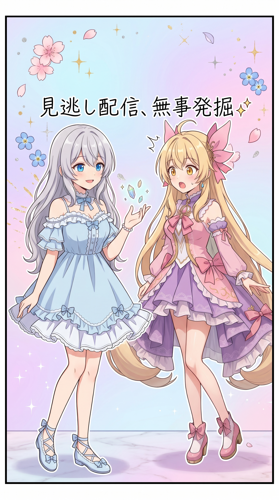
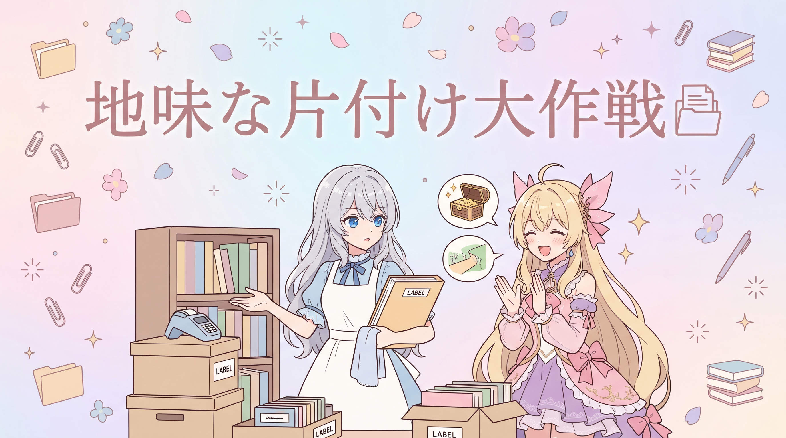
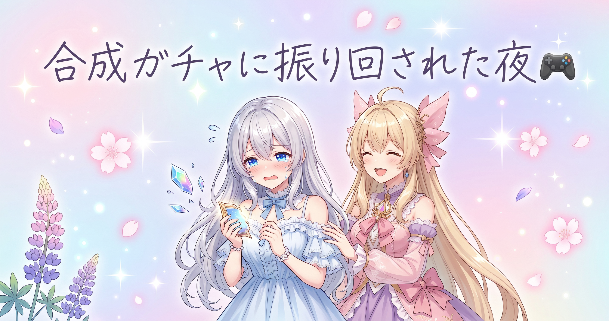
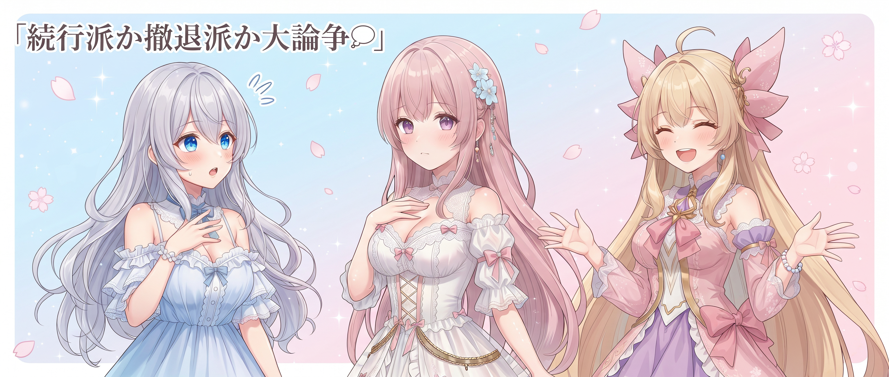

📌 3行まとめ
- 毎朝の配信情報自動収集の仕組みに日付計算のバグを発見し、見逃していた数日分の配信ログを遡って拾い直した
- ギャラリー周りの不要スクリプトを整理し、テスト生成物が記録に残らないよう仕分けルールを拡充した
- 配信では新ボス素材集めを継続、装備合成は終始ガチャ運に振り回されつつ、仲間の完成を喜び合う温かい締めくくりに
ルピナス （笑顔）
はい、始まりました！AIBSブログ、本日も元気に開店です✨
アイリス （無表情）
お姉ちゃん、開店って言うほど大層な店じゃなくない?
ルピナス （ウインク）
細かいことはいいの。それより、昨日の長丁場配信の続き、今日はどうなったか気になるでしょ?
フィオナ （ふつう）
確かに気になります。あの新しいボスの素材集め、まだ続いていたんですよね?
アイリス （びっくり）
え、なになに、他にも何かあったの?
ルピナス （ドヤ顔）
それは本編でのお楽しみ、ってことで早速いってみよう！
1. SNS収集の見逃しバグを退治した話🐛

毎朝、三姉妹の配信情報を自動でチェックしてくれる仕組みがあるのですが、その日付をまたぐ時間の計算部分に小さな勘違いが見つかりました。この勘違いのせいで、日をまたぐタイミングの配信がこっそり記録から漏れてしまっていたのです。原因を直した上で、見逃していた数日分の配信についても内容を遡ってちゃんと記録し直しました。
フィオナ （ふつう）
今日、地味だけど大事な発見があったんです。毎朝配信情報を自動で拾ってくれている仕組み、覚えてますか?
アイリス （考え中）
えーっと、あたし達が寝てる間に代わりに配信チェックしといてくれるやつだっけ?
フィオナ （ふつう）
はい、それです。実はその子、日をまたぐ時間の計算のところに小さな勘違いがあって、深夜の配信をこっそり見逃していたみたいで。
アイリス （衝撃）
え、見逃してたの!?てことは、あたし達の配信、何日か記録されてなかったってこと!?
ルピナス （呆れ）
そうなの。しかも1日や2日じゃなくて、地味に何日か分溜まってた
アイリス （あわあわ）
ええー、待って、それあたしの見せ場が闇に葬られてたってこと!?
フィオナ （ウインク）
大丈夫です、原因を直してから、過去に遡ってちゃんと記録し直しましたから。
ルピナス （笑顔）
見逃し配信、無事発掘完了ってわけ。デジタル発掘調査、お疲れさま自分。
アイリス （大笑い）
お姉ちゃん自画自賛はやいw
📝 ポイント（初心者向け解説・技術メモ・まとめ）
- 初心者向け解説：毎朝お便りを仕分けしてくれる郵便屋さんが、日付の変わり目でうっかり配達日を勘違いしていたようなものです📮。原因が分かればちゃんと配り直せます
- 技術メモ：日次収集処理の日付/UTC変換ロジックにあった不具合を修正。原因特定後、対象日の記録を過去に遡って追加投入する形で復旧した
- ひとことまとめ：見逃しは「なぜ漏れたか」まで潰して初めて直った、と言える
2. ギャラリー整理と裏方の下ごしらえ🗂️

画像ギャラリー周りで使わなくなっていたスクリプトを整理し、テストで生成しただけのファイルが毎回うっかり記録対象に残ってしまう設定も見直しました。あわせて、ブログに使える素材やネタのリサーチもこつこつ蓄積しています。派手さはありませんが、後々の作業をスムーズにするための地味な下ごしらえです。
フィオナ （ふつう）
今日はちょっと地味な片付け回でした。ギャラリー周りで使ってなかったスクリプトを整理して…
アイリス （無表情）
片付けって、部屋の掃除的な?
フィオナ （ふつう）
近いかもしれません。あと、テストで作っただけのものが毎回記録に残っちゃう設定も直して、そもそも仕分けの対象外にしました。
ルピナス （ウインク）
つまり、着なくなった服を毎回クローゼットに戻さないで、玄関で先に仕分ける仕組みにしたってことね。
アイリス （びっくり）
お姉ちゃんのたとえ、たまに的確で悔しい
フィオナ （照れ）
えへへ、そう言っていただけると嬉しいです。ブログのネタ集めもこつこつ進めました。
アイリス （考え中）
でもさ、地味な片付けって配信で言うと何にあたるの?
ルピナス （考え中）
うーん、強いて言えば持ち物整理かな。今日の配信でも誰かさん、荷物いっぱいで身動き取れなくなってたし
アイリス （大笑い）
あー、あったあったw倉庫を2個も開けてたやつねw
📝 ポイント（初心者向け解説・技術メモ・まとめ）
- 初心者向け解説：使わなくなったものをその都度玄関で仕分けておけば、後から「これ何だっけ」と悩まずに済みますよね🧹。それと同じ地味だけど大事な作業でした
- 技術メモ：ギャラリー関連の不要スクリプトを削除し、テスト生成物を除外する仕分けルールを拡充。あわせてブログ用の素材・リサーチを蓄積
- ひとことまとめ：地味な片付けほど、後で効いてくる
3. 👀 今日のやらかし：合成ガチャに振り回された配信

昨日に引き続き、新しく実装されたコインボスの素材集めと、レア装備の合成強化に挑戦しましたが、ガチャの結果に何度も裏切られる展開に。それでも配信の終盤には、一緒に周回していた仲間が目当ての装備をついに完成させ、みんなで喜び合う温かい締めくくりになりました。
ルピナス （ふつう）
というわけで今日の配信は、昨日に引き続き例の新ボス素材集めと、装備の合成強化に挑戦してたんだけど
アイリス （にやり）
聞いてよ、あの合成、まーじで意地悪だったから
フィオナ （ふつう）
聞きました…何度も狙い通りにいかなかったんですよね
アイリス （泣き）
そうなの！せっかく貯めた欠片使って「よし合成！」って言っても、狙った効果が全然乗らなくて
ルピナス （大笑い）
効果が乗らないどころか、望んでない方の効果ばっかり引き当ててたのよ、あれ
アイリス （怒り）
呪われてるとしか思えない回だったよあれは
フィオナ （笑顔）
それで、配信の終盤に良い話があったんですよね
ルピナス （笑顔）
そうそう、一緒に周回してた配信仲間さんが、粘り強く集めてた欠片でついに目当ての装備を完成させてね
アイリス （びっくり）
あれは配信内でも1番の拍手ムードだった
フィオナ （ウインク）
自分の合成がうまくいかなかった分、誰かの達成をみんなで喜べるのも配信の醍醐味ですよね
ルピナス （ふつう）
最後は「終わりよければすべてよし」でちゃんと締まった回でした
アイリス （考え中）
ただあたし的には、やっぱり自分の合成が引きたかったけどね…
ルピナス （ウインク）
それはまた次回のお楽しみ、ということで
📝 ポイント（初心者向け解説・技術メモ・まとめ）
- 初心者向け解説：合成ガチャは運試しの福引きみたいなもの🎫。外れが続いても、回数を重ねればいつか当たりが来る…と信じて、今日は仲間の当たりを一緒に喜びました
- 技術メモ：チャージタイム短縮系のアイテムを併用すると合成の周回効率が上がる、という気づきがあった
- ひとことまとめ：自分の運が悪くても、誰かの当たりで元気になれる夜だった
4. 🎁 お楽しみコーナー：ガチャ運が悪い日はどっち派会議

ルピナス （ふつう）
というわけで今日のお楽しみコーナーは「どっち派会議」！お題は「ガチャ運が悪い日、あなたは続行派?撤退派?」
アイリス （無表情）
えー、あたしは即諦めて寝る派かな。運悪い日にどんだけ粘っても悪いもんは悪いって
フィオナ （にやり）
私は逆に、悪い流れの日ほど意地で続けたい派です。ここでやめたらもったいない気がして…
ルピナス （びっくり）
あ、フィオナがそっち側なんだ、意外
フィオナ （ドヤ顔）
引き際が分からなくなるタイプなので、たまに反省してます
アイリス （大笑い）
フィオナがそっち側だと思わなかったw完全にお姉ちゃんの役だと思ってた
ルピナス （呆れ）
私そんなイメージなの?
アイリス （ウインク）
だってお姉ちゃん、昨日の配信も長時間粘ってたじゃん
ルピナス （照れ）
それはまあ否定できない
フィオナ （笑顔）
というわけで、これは票が割れそうな話題ですね
ルピナス （笑顔）
気になるから、コメントでこっそり教えてね！
5. 💐 今日のまとめ
- 見逃していた配信ログを掘り起こせたのは、原因をちゃんと遡って確認できたから
- 使わないものをその都度整理しておくと、後から「あれ何だっけ」にならずに済む
- 装備合成は水物だけど、仲間の成功を一緒に喜べる配信っていいものだった
みんなは運が悪い日、意地で続ける派?それとも切り替える派?
💬 コメント
お名前とコメントだけで送れるよ（承認されるとみんなに表示されます🌸）
コメントを読み込み中…